13 new interface assets: nine panels/decorations and four control icons. Staff-outfit mascot and social preview remain pending.
Play the updated game · Game checks · Win / lose checks · Orientation checks
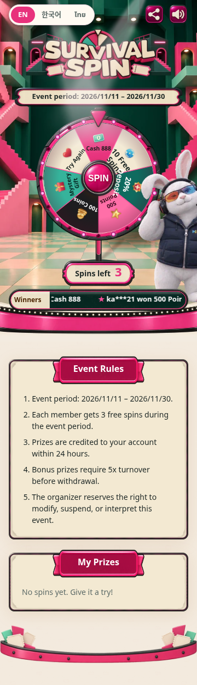
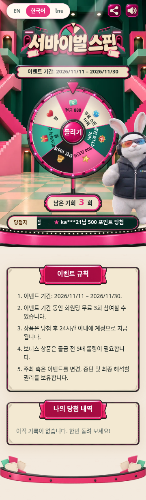
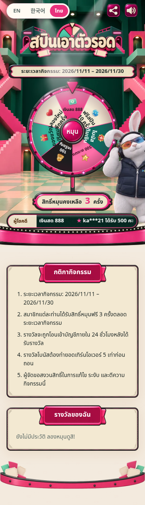
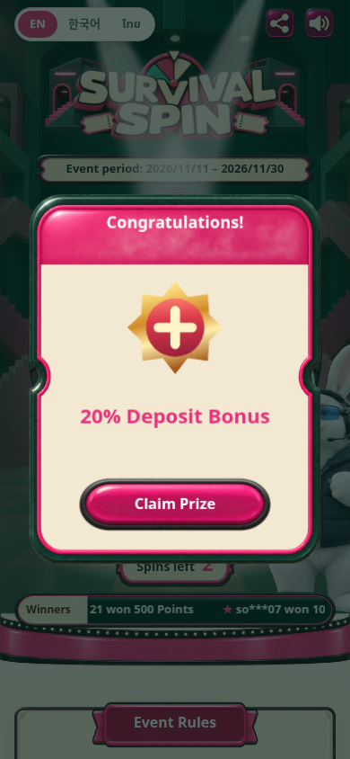
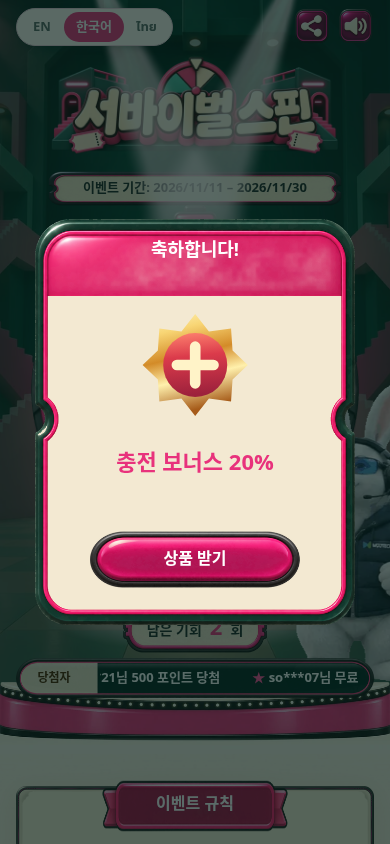
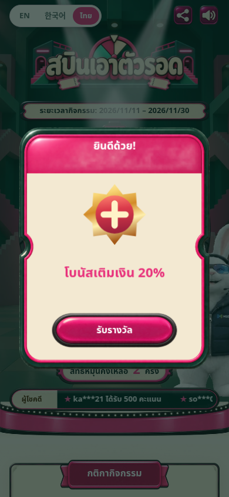
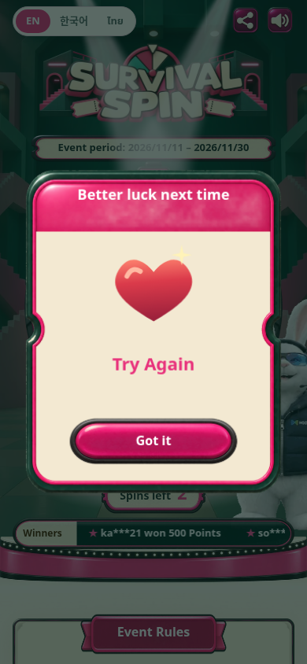
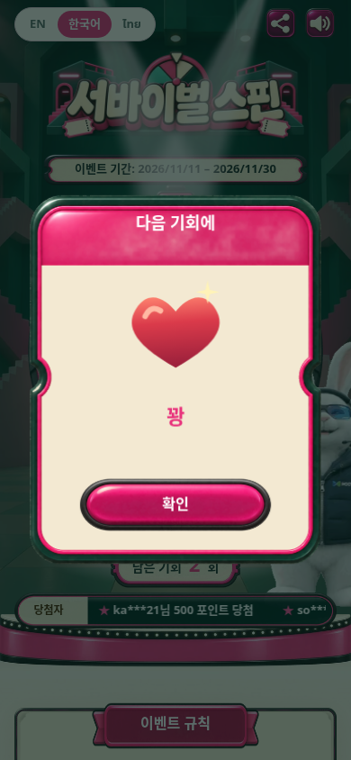
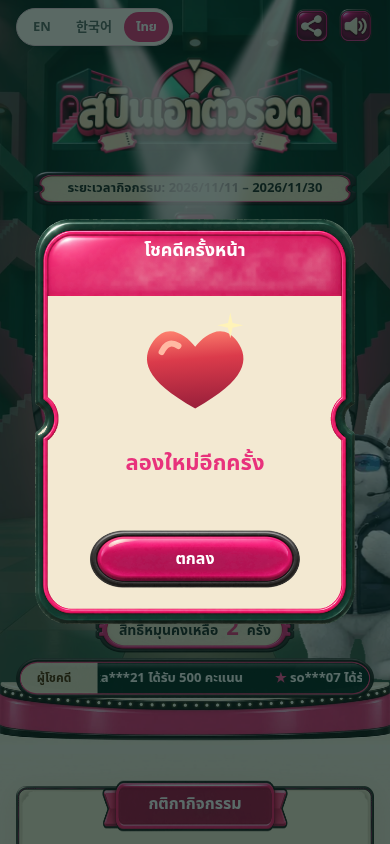
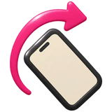
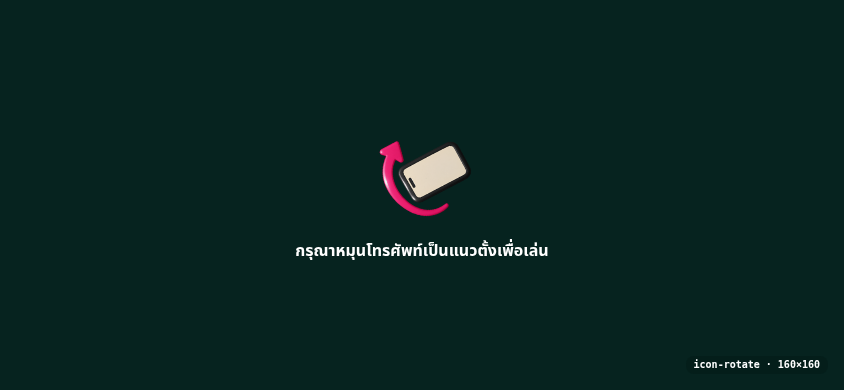